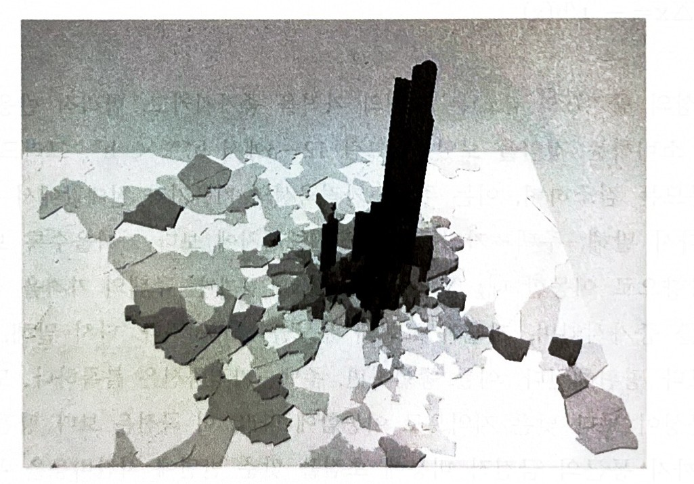
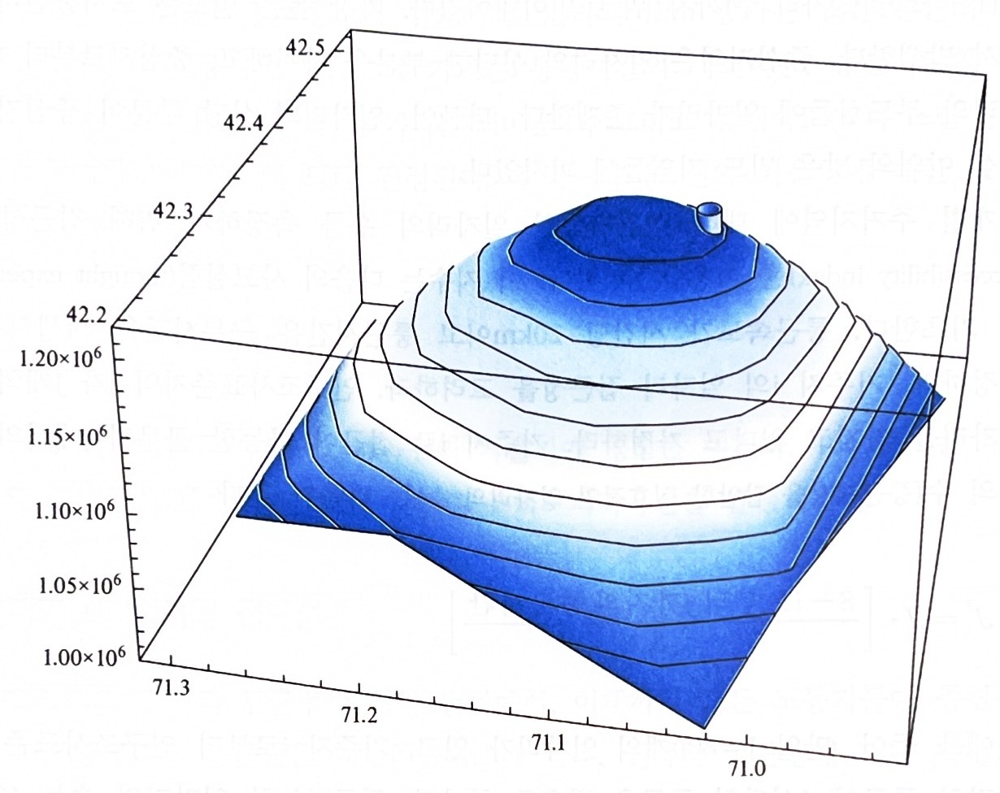
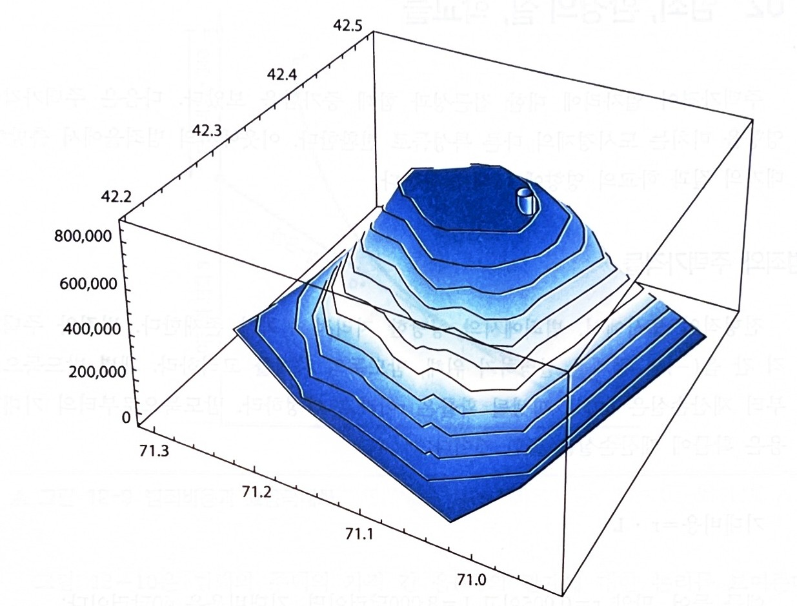

6강에서 뺀 슬라이드
2026-10-06 보관
이 파일은 무엇인가
6강 「도시토지이용과 분포」에서 뺀 슬라이드를 버리지 않고 모아 둔 것
- 지난 시간 — 도시노동시장 (글 판) — 2026-10-06 에 인포그래픽으로 바꾸며 뺌 (본편 2쪽)
- 비옥도가 지불용의를 정한다 — 2026-10-06 에 뺌 (본편 8~10쪽). 이성원 강의노트 p.151 을 옮긴 「리카르도의 차액지대 이론: 비옥도별 비용과 지대」가 같은 비용곡선(FARM)으로 대신한다
- 제조업 임대료와 제조업의 공간적 분포 — 2026-10-06 에 뺌 (본편 19쪽, 덴버 지도 설명)
- 사무 부도심들 · 03 고층 건물 게임(4장) · 04 사무업의 공간적 분포 섹션 · 사무공간은 시내에만 있지 않다 — 2026-10-06 교수 요청으로 뺌 (본편 36·44~48·50쪽)
- 통근비용과 효용극대화 · 가까워지면 얼마를 더 · 내쉬균형을 위해서는 2달러로 모자란다 — 2026-10-06 에 뺌 (본편 54~56쪽). 이성원 강의노트 p.163 한 장이 대신한다
- 일자리가 흩어져 있으면 · 집수지역으로 좁혀 — 2026-10-06 에 그림 12−6·12−8 만 남긴 「도시 중심지와 일자리 접근성」 한 장으로 합침 (본편 59·60쪽)
- 세계 도시들의 건설밀도 — 2026-10-06 에 뺌 (본편 75쪽)
- 주택의 이윤-극대화 수량 · 주택가격이 높으면 밀도가 높아진다 (원판) — 2026-10-06 에 누적 공개와 설명을 줄이기 전의 판 (본편 66~71쪽)
→ 배포하지 않는다. course.json 의 강의 목록에도 넣지 않는다.
지난 시간 — 도시노동시장
노동시장의 두 곡선
도시노동공급곡선은 우상향함 — 임금이 오르면 다른 도시에서 노동자가 들어옴
도시노동수요곡선은 우하향함 — 수출기업의 고용이 임금에 반응함
고용승수
수출부문 일자리 하나가 지역서비스 일자리를 더 불러 총 고용이 처음보다 크게 늘어남
승수는 큰 도시에서 더 큼
비교정학
노동수요가 늘면 임금과 고용이 함께 오르지만, 새 일자리의 상당 부분은 이주해 온 사람에게 감
노동공급이 늘면 고용은 늘고 임금은 내림
공공정책
세금 유인책·스포츠 경기장·초대형 이벤트의 고용효과는 대체로 기대보다 작음
→ 지난 시간까지는 노동자와 기업이 얼마나 모이는지를 봤음.
오늘은 그들이 어디에 자리 잡는지, 즉 토지시장으로 옮겨 감
10장 농업·제조업 토지 · 11장 사무공간과 건물높이 ·
12장 주택과 주거용 토지
비옥도가 지불용의를 정한다
한계비용곡선은 평균 총 비용곡선을 최저점에서 관통함
비용곡선은 재료·자본·노동·농부의 기회비용을 포함한 모든 비토지 비용을 담음
농부는 가격 = 한계비용인 생산량에서 이윤을 극대화하고, 음영 사각형이 이윤 사각형
제조업 임대료와 제조업의 공간적 분포
교재 그림 10−7은 2015년 덴버에서 제조업의 공간적 분포를 보여줌
인구조사표준지역을 퍼즐조각으로 그리고 제조업 고용밀도만큼 밀어 올린 지도
제조업 밀도는 인구조사표준지역에서 1헥타르당 제조업 노동자수와 같음
1헥타르는 100평방미터로 풋볼 경기장의 대략 두 배에 해당함
지도에서 리본모양은 대도시지역을 지나는 고속도로를 나타냄
→ 다수의 큰 대도시지역들에서와 같이, 거대한 제조업 고용은 고속도로에 접근 가능한 지역에 존재함
→ 대부분의 기업들이 도시 간 고속도로체계에 연결된 고속도로 가까이에 입지하므로 도시 제조업 고용은 분산적이고 널리 퍼짐
사무 부도심들 (suburban subcenters)
근대 도시에서 사무기업 고용은 도시 중심부 · 교외 부도심 · 그 밖의 작은 군집지로 나뉨
군집지마다 지불용의는 그 군집지의 중심에서 정점에 도달함
부도심의 기업들도 도시 중심부의 기업들과 정보를 교환한다면, 지불용의는 도시 중심부까지의 거리가 멀어질수록 함께 감소함
→ 경쟁적인 환경에서 사무공간의 가격은 기업들의 지불용의와 일치함
03 고층 건물 게임
토지의 높은 가격이 고층 건물을 다 설명하는가 · 교재 p.228~232
가장 높은 건물이 되기 위한 경쟁
개별 기업은 가장 높은 건물을 갖는 데 V = 20백만달러의 가치를 둠 — 무료 기업홍보, 혹은 투자자에게 보내는 신호
단 하나의 기업만 가질 수 있으므로 기업들은 20백만달러의 상금을 건 비협조적 게임에 참여하고 있음
→ 상금이 없다면 h* = 50층에서 이윤 90백만달러로 끝남. 80층으로 지으면 이윤은 70백만달러로 떨어짐
기업 1 이 먼저 짓고 기업 2 가 보고 짓는다
기업 1 은 자기 높이에 대한 기업 2 의 반응을 미리 따져 봐야 함
| 기업 1 의 선택 | 기업 2 의 반응 | 왜 그런가 |
|---|---|---|
| h₁ = h* = 50 | h₂ = 51 — 상금을 탐 | 51층에서 겪는 손실이 20백만달러 상금보다 작음 |
| h₁ = 51 | h₂ = 52 — 상금을 탐 | 상금이 51·52층에서 겪는 손실을 능가함 |
| h₁ = 80 | h₂ = 50 — 승복함 | 81층의 이윤은 70백만달러 바로 밑. 20백만달러를 타려고 20백만달러가 조금 넘는 금액을 희생하는 것은 비합리적임 |
→ 내쉬균형은 (h₁, h₂) = (80, 50). 기업 1 은 건물이윤 70 + 상금 20 = 90백만달러, 기업 2 도 건물이윤 90백만달러
→ 상금이 클수록 지나치게 높게 짓는 양이 커져 가장 높은 건물과 두 번째 건물의 격차가 벌어짐. 미국 20대 도시에서 그 격차는 평균 약 27%임
내쉬균형은 파레토 비효율적이다
내쉬균형 (80, 50)에서 두 기업은 각각 90백만달러를 범
기업 1 이 80층에서 51층으로 낮추면 건물이윤이 90백만달러 바로 아래가 되어 상금과 합해 109백만달러가 됨. 기업 2 는 그대로 90백만달러임
아무도 나빠지지 않고 기업 1 만 19백만달러 나아지므로 이것은 파레토 개선임
→ 가장 높은 건물이 되기 위한 경쟁은 균형 높이를 효율적인 높이 이상으로 끌어올림
→ 효율적인 결과는 50층 두 채에 건물이윤 180백만달러. 내쉬균형에서 시장의 총 가치도 180백만달러(90 + 70 + 20)로, 상금만큼 잉여가 줄어듦
04 사무업의 공간적 분포
모형이 예측한 것이 실제로 보이는가 · 교재 p.232~234
사무공간은 시내에만 있지 않다
13개 대도시지역의 사무공간을 밀도로 세 유형으로 나눈 것
| 대도시지역 | 높은 밀도(시내) | 중간 밀도(부중심) | 낮은 밀도(산재) |
|---|---|---|---|
| 13개 평균 | 0.33 | 0.28 | 0.40 |
| 뉴욕 | 0.55 | 0.13 | 0.32 |
| 시카고 | 0.49 | 0.11 | 0.39 |
| 보스턴 | 0.39 | 0.11 | 0.50 |
| 워싱턴, DC | 0.23 | 0.53 | 0.24 |
| 애틀란타 | 0.07 | 0.55 | 0.38 |
| 마이애미 | 0.09 | 0.19 | 0.72 |
높은 밀도 = 평방마일당 7.5백만 평방피트 이상 · 중간 밀도 = 2백만~3.5백만 · 낮은 밀도 = 2백만 미만. 출처: Lang, Robert E., “Office Sprawl,” The Brookings Institution, 2000 (교재 표 11−1, p.233)
→ 대도시지역 전체로 약 1/3만 높은-밀도 시내에 있고 2/5는 낮은-밀도 지역에 있음
→ 시내 비중이 큰 곳은 뉴욕·시카고·보스턴, 작은 곳은 애틀란타·마이애미·로스앤젤레스임
통근비용과 효용을 극대화하는 주택소비
모든 고용이 중심상업지구에 있는 단순한 도시. 가구는 고정된 소득 w 를 주택·통근·여타 재화에 씀
$\text{수직축 절편} = w - t\,x$
w = 2,000달러, t = 킬로미터당 50달러, x = 10킬로미터라면 절편은 1,500달러임
→ 효용은 한계대체율 = 가격비율인 점 a 에서 극대화됨
→ 점 z 도 예산선 위에 있어 살 수는 있으나 낮은 무차별곡선 위에 있음 (u* > u′)
→ 점 z 에서는 한계대체율이 가격비율보다 작아 주택을 줄이고 여타 재화를 늘리는 것이 합리적임
가까워지면 얼마를 더 낼 수 있나
x = 10 에서 x = 6 으로 4킬로미터 가까이 가면 통근비용이 줄어듦
$\Delta\text{통근비용} = \Delta x \cdot t = 4 \times 50 = \$200$
주거 입지에서 내쉬균형이 되려면 이 200달러가 다른 변화로 상쇄되어야 함. 그 변화가 주택가격의 증가임
→ 가격이 2달러 오르면(p′ = 8) 예산이 정확히 상쇄되어 원래 묶음 점 a(h* = 100)를 여전히 살 수 있음
→ 통근비용 200달러 감소 = 주택가격 2달러 증가 × 100평방미터
내쉬균형을 위해서는 2달러로 모자란다
p′ = 8 이면 점 a 를 여전히 살 수는 있으나, 그 예산선에서 합리적 선택은 점 b — 주택을 줄이는 것임
점 b 의 효용 u″ 는 원래보다 높음. 그러면 x = 10 의 거주자가 x = 6 으로 옮길 유인이 남아 내쉬균형이 아님
가격이 p**(> p′) 까지 더 올라가야 예산선이 안쪽으로 기울어 원래 효용 u* 가 회복됨. 그 자리가 점 c 임
→ 고정된 효용에서 가격이 오르면 주택소비는 줄어듦: h** < h*
→ 접근성에 대한 웃돈은 통근비용 차이를 상쇄하는 몫보다 큼
일자리가 흩어져 있으면 접근성을 어떻게 재는가
이제까지는 모든 노동자가 중심상업지구로 통근한다고 가정했음. 현대 대도시지역에서 일자리는 넓게 퍼져 있음
통근속도는 시간당 20km 이고 통근시간은 근무시간을 희생시킨다고 가정함
$J^{*} = J \cdot \dfrac{8 - (i \to j\ \text{통근시간})}{8}$
J = 800 개이고 통근이 1시간이면 J* = 700, 2시간이면 J* = 600. 거주지 i 의 총 접근성은 이들의 합임 (1,300)
→ 지수는 도시중심지 인근에서 가장 높고 멀어질수록 감소함

그림 12−6 고용밀도, 2014년의 보스턴

그림 12−7 2014년 보스턴에서의 대도시 접근성 · 오설리반, 『오설리반의 도시경제학』 제9판, 박영사, 2022 (p.250, p.252)
집수지역으로 좁혀 재어도 결론은 같다
앞의 대도시 접근성 지수는 대도시지역 전체의 일자리를 셈
거주지마다 10km 집수지역(catchment area)을 정하고 그 안의 일자리만 세는 방법도 있음
→ 두 방법 모두 지수가 도시중심지 인근에서 가장 높고 중심지로의 거리가 늘수록 감소함
→ 일자리가 중심상업지구에만 있지는 않지만 도시중심지까지의 거리는 여전히 쓸 만한 측정기준임
→ 헤도닉 연구들은 중심지까지의 거리가 늘수록 주택가격이 낮아짐을 보이며, 일자리 접근성이 그 음(−)의 관계에서 중요한 몫을 함

오설리반, 『오설리반의 도시경제학』 제9판, 박영사, 2022, 그림 12−8 (p.253)
세계 도시들의 건설밀도
건설밀도 = 대도시지역의 총인구 ÷ 도시에 이용되는 토지 (주거지역·산업지구·상업지역·도로·학교·도시공원을 포함)
출처: Bertaud, Alain, “Metropolis: A Measure of the Spatial Organization of 7 Large Cities,” 2001 (교재 그림 12−17, p.265)
→ 아시아 도시들이 목록의 위쪽, 미국 도시들이 아래쪽에 있음. 뉴욕은 미국에서 가장 밀도가 높지만 파리의 절반, 바르셀로나의 1/4, 상하이의 약 1/8임
주택의 이윤-극대화 수량
1헥타르 부지에 주택을 짓는 기업. 작은 집 한 채를 지을 수도, 1헥타르를 덮는 30층 주거용 타워를 지을 수도 있음
토지가 고정되어 있으므로 주택생산은 체감하는 보수 아래 있음 — 한계비용이 우상향함
한계편익은 그 부지의 주택가격 p(x′) 이라 수평임. 일자리 접근성·환경의 질·범죄율·학교생산성이 이 높이를 정함
→ 한계의 원리가 충족되는 H* 에서 이윤이 극대화됨
→ 두 곡선 사이의 음영 면적이 경제적 이윤이고, 건설회사들 간 경쟁이 이를 토지의 가격으로 바꿈 — 잉여의 원칙
주택가격이 높으면 밀도가 높아진다
새 부지의 가격이 더 높은 이유는 넷 중 하나임 — 일자리 접근성 · 낮은 범죄율 · 높은 환경의 질 · 나은 학교
한계편익곡선이 위로 올라가 한계의 원리가 더 큰 수량에서 충족됨: H** > H*
→ 단위 토지당 주택이 늘어남. 곧 주택밀도가 높아짐
→ 토지의 더 큰 비중이 구조물로 덮이고, 건물이 더 높아짐
→ 음영 면적이 넓어짐. 주택생산업체들 간 경쟁이 이를 토지 임대료로 바꾸므로 주거용 토지의 가격도 높아짐 — 지주가 편익을 얻음